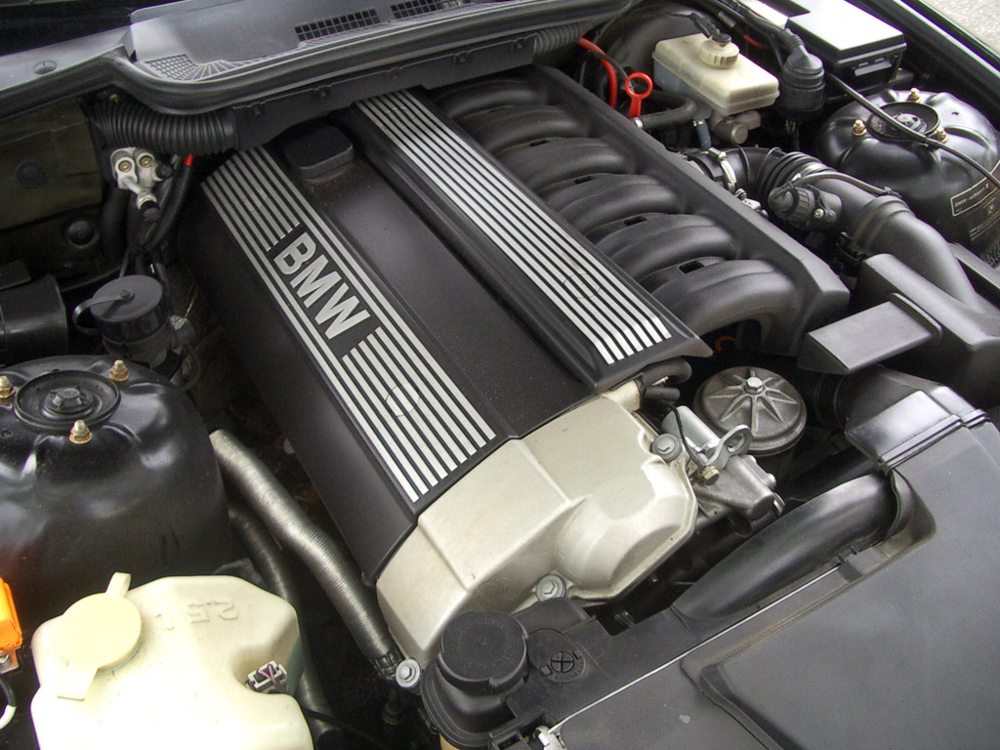

Bir otomobil satın almadan önce konfor, teknoloji ve performans ilk bakışta akla gelen özellikler olarak
bilinir. Sürücülerin ihtiyaçlarına göre konfor, teknoloji veya performans aracı tercih etmedeki temel
sebepler olabilir. Aracın performansını önceliğine alarak seçim yapmak isteyen sürücüler bazın noktalara
dikkat eder. Otomobilin performansını belirleyen iki temel kavram vardır.
TORK NEDİR, BEYGİR GÜCÜNDEN FARKI NEDİR?
Bir otomobil satın almadan önce konfor, teknoloji ve performans ilk bakışta akla gelen özellikler olarak
bilinir. Sürücülerin ihtiyaçlarına göre konfor, teknoloji veya performans aracı tercih etmedeki temel
sebepler olabilir. Aracın performansını önceliğine alarak seçim yapmak isteyen sürücüler bazın noktalara
dikkat eder. Otomobilin performansını belirleyen iki temel kavram vardır.
Bu kavramlar, tork ve beygir gücü olarak öne çıkar. Tork ve beygir gücü her ne kadar birbirlerini
tamamlayan kavramlar olsa da çok ayrı anlamlar ifade eder. Peki, bir aracın performansını beygir gücü mü
tork mu belirler? Bunu anlamak için öncelikle beygir gücü ve tork anlamlarını iyi şekilde bilmek gerekir.
TORK NEDİR? TAŞITLARDA TORK GÜCÜNÜN ROLÜ NEDİR?
Tork, özetle dönme kuvveti olarak tanımlanabilir. Daha doğrusu, bir cismin dairesel olarak hareket
etmesine neden olan kuvvet tork ile ifade edilir. Torkun ne olduğunu anlamak için tork birimi nedir
sorusunun yanıtını da iyi bilmek gerekir. Birim sisteminde tork birimi Newton-Metre (Nm) olarak
gösterilir. Peki, otomobilde tork nedir? Araçların motorları dairesel bir şekilde çalışır ve gücü iletir.
Bu yüzden, otomobil motorunun kuvveti torkla ifade edilir. Tork gücü nedir? sorusunun yanıtı da işte
buradan doğar. Alçak devirde yüksek tork değerine sahip araçlar, yüksek çekiş gücüne sahiptir. Yüksek tork
değerine sahip araçlar ise üzerindeki yükü daha az yakıt tüketimi ve daha iyi performansla taşır.
Taşıtlarda torkun en önemli görevleri hızlanma sırasında yüksek hızlara daha çabuk ulaşılması, yokuş
yukarı çıkarken, yük varken ve klima sistemi gibi etkenler açıkken aracın çekişinin düşmemesidir. Diğer
bir avantajı da vites geçişlerindeki ara hızlanmaları kolaylaştırmasıdır.
Tork ile ilgili sürücülerin kafasında daha birçok soru işareti yer almaktadır. Tork değeri nedir?, Tork
nedir nasıl artırılır? Tork nedir beygir nedir? gibi pek çok soru akıllarını kurcalar. Araçların tork
değerleri motordaki krank milinin bir dakikada yaptığı dönüş sayısını temsil eder. Tekerleklere itme veya
dönme kuvveti olarak yansıyan dönüş sayıları ise araçların hızını ve çekiş gücünü etkiler. Motordaki
dişlilerin yerlerini ve çaplarını değiştirmek, piston kolu ayarları yapmak kuvvet kolunu artırmanın
yollarından bazılarıdır. Örneğin; piston kolu benzinlilere göre daha uzun olan dizel motorlu araçlar daha
yüksek tork değerlerine sahip olur. Tork kavramının nasıl hesaplandığını daha iyi anlamak için devir
göstergesine de bakılabilir. Nm ile ifade edilen tork gücü, otomobil özelliklerinde devir dakika
bilgisiyle birlikte gösterilir.
BEYGİR GÜCÜ NEDİR?
Tork gücünü yeterince açıkladıktan sonra şimdi de gelin beygir gücüne hep beraber bakalım. Beygir gücü ne
demek? Beygir gücü ne işe yarar? Otomobilde beygir gücü nedir? Ya da beygir gücü nasıl hesaplanır? gibi
soruların yanıtlarını arayalım. Beygir gücü, çok eski zamanlardan günümüze kadar ulaşmış, otomotiv
terminolojisi içerisine girmiş ve zamanla önemli bir yer edinmiş güç hesaplama aracıdır. Motorlu araçların
bulunmadığı yıllarda ortaya çıkmış olmasına rağmen halen kullanılan bir teknik olmasıyla dikkatleri çeker.
Beygir gücü, tarihte ilk kez İskoç mühendis ve mucit James Watt tarafından kullanılmıştır. James Watt,
atın bir saniyede bir metre mesafeye taşıdığı güç miktarını 50 kilogram olarak hesaplayarak beygir gücü
yani Horse Power (HP) terimini duyurmuştur. Otomotiv mühendisleri ise araçlardaki ağırlığı 75 kilogram
olarak belirlemiştir. Yani, beygir gücü 75 kilogramlık ağırlığı 1 saniyede 1 metre ileri taşıyabilecek güç
miktarı olarak tanılanabilir. İşte, beygir gücü hesaplama bu şekilde yapılır.
BEYGİR GÜCÜ YÜKSEK HIZLARI TEMSİL EDER
Beygir motor gücü, bir taşıtın ulaşabileceği maksimum sürati belirler. Beygir gücünün fazla olması,
taşıtın düz bir yolda daha yüksek hızlara çıkabilmesini sağlar. Tork kuvveti kenara koyulduğunda düz bir
zeminde aynı özelliklere sahip olan iki taşıttan yüksek beygir gücüne sahip olan araç daha yüksek hızlara
ulaşabilir. Tork da ise işler biraz daha farklıdır. Yüksek torka sahip bir araç, maksimum hızlara daha
çabuk bir şekilde ulaşabilir. Aynı zamanda, eğimli yerlerde etkisini daha iyi gösterir. Bununla beraber,
beygir gücü yükseltme günümüzde çok sık başvurulan bir yöntemdir. Aracın yapısını bozabilecek şekilde
yapılan yükseltmeler büyük arızalara yol açabileceği gibi yazılımla yükseltilmiş beygir gücü yakıt
tüketimi açısından da olumsuz sonuçlar doğurabilir.
DİZEL VE BENZİNLİ ARAÇLARDA TORK ETKİSİ
Torkun yarattığı etki dizel ve benzinli araçların tercih edilmesine de katkı sağlar. Dizel motora sahip
olan araçların neden ekonomik olarak rağbet gördüğünü tork özelliği sayesinde açıklayabiliriz. Dizel
motorlu araçlar düşük devirlerde yüksek torklara ulaşabildiklerden hem kısa vakitte atağa geçme hissi hem
de yakıt ekonomisini bakımından tercih edilir. Benzinli araçlarda ise daha yüksek devirlere çıkılabilir,
haliyle maksimum torka ulaşmak biraz zaman alır. Ancak benzinli motorlar, dizel motorlara göre uzun yolda
daha fazla performans göstermektedir. Tabii bu yüksek performansın dezavantajı olarak arabayı yüksek
devirlerde kullanmak yakıt tüketimini artırabilir.
Görüldüğü üzere, birbirlerinden farklı olan tork ile beygir gücü kavramları aynı zamanda bir elmanın iki
yarısı şeklinde düşünülebilir. Beygir gücü ve tork arasındaki en temel fark temsil ettikleri alanlardır.
Tork çekiş gücünü ifade ederken, beygir gücü hızı temsil eder. Ayrıca, tork devir göstergesiyle kontrol
edilirken beygir gücünde hız göstergesine bakılır. Bir otomobil alırken yapılan tork veya beygir gücü
seçimi, aracın kullanım amacına ve sürücünün sürüş zevkine bağlıdır.
Admin
18 Temmuz 2024
Post a comment
1 Comment

Anonim
07 Mayıs 2024
This is useful.